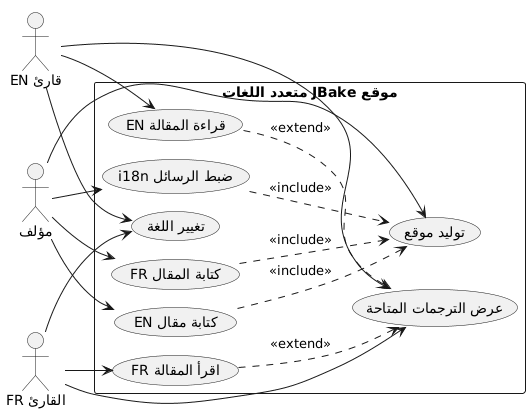
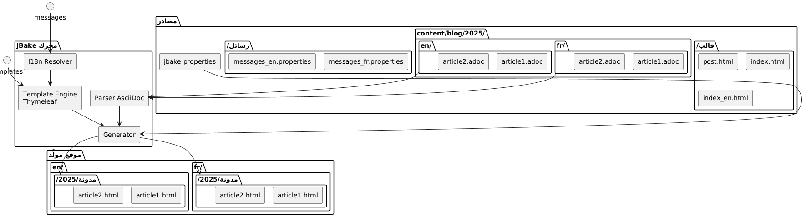
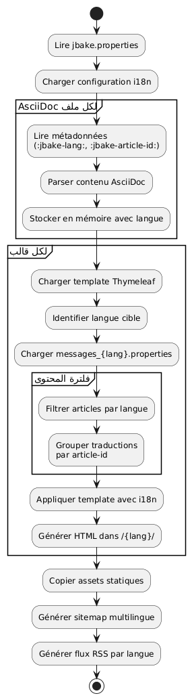
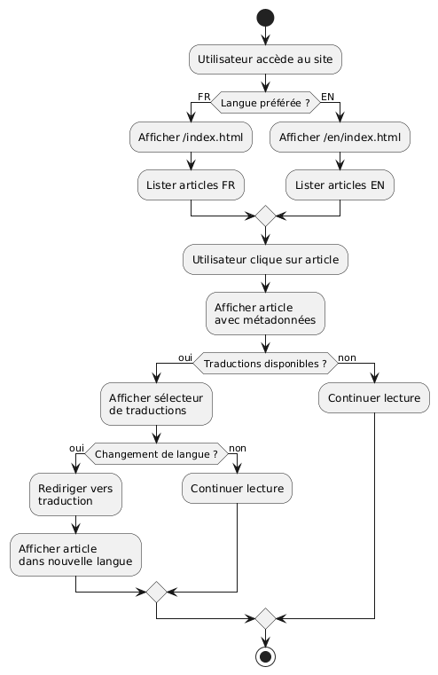

تطويب موقع ثابت JBake دوليًا باستخدام Thymeleaf
Publié le 20 October 2025
مقدمة
يمكن أن يبدو تعريب (i18n) لموقع ثابت معقدًا في البداية، لكن JBake المدمج مع Thymeleaf يقدّم حلولًا أنيقة لإنشاء موقع متعدد اللغات. في هذه المقالة، سأريكم كيف قمت بإعداد التعريب (i18n) على مدونتي، مع تغطية كل من القالب وإدارة المقالات بعدة لغات.
مخطط حالة الاستخدام (Use Case)

معمارية التدويل
نهجنا يرتكز على عمودين :
-
الدّوليّة (i18n) للقالب: استخدام ملفات رسائل Thymeleaf للعناصر الواجهة
-
i18n للمحتوىتنظيم المقالات حسب اللغة في هيكل مجلد مخصص
مخطط البنية (تنظيم الملفات)

لماذا هذا النهج؟
هذا الفصل يسمح ب:
-
الحفاظ على التماسك في الواجهة بغض النظر عن اللغة
-
إدارة المحتوى وترجمات المقالات بشكل مستقل
-
تسهيل إضافة لغات جديدة دون الحاجة إلى إعادة هيكلة رئيسية
-
السماح بالمقالات المتوفرة فقط في بعض اللغات
مخطط المكونات

I18n للتemplating مع Thymeleaf
هيكل ملفات الرسائل
الخطوة الأولى هي إنشاء ملفات الخصائص لكل لغة مدعومة :
src/jbake/templates/
├── messages.properties # Fallback par défaut
├── messages_fr.properties # Français
├── messages_en.properties # Anglais
└── messages_de.properties # Allemandمحتوى ملفات الرسائل
هذا مثال لملف`messages_fr.properties`:
# Navigation
nav.home=Accueil
nav.blog=Blog
nav.about=À propos
nav.contact=Contact
# Articles
article.readmore=Lire la suite
article.published=Publié le
article.tags=Étiquettes
article.also.available=Également disponible en
# Interface
site.title=Mon Blog Technique
site.description=Partage de connaissances et expériences
footer.copyright=© 2025 Tous droits réservés
search.placeholder=Rechercher un article...ومكافئه بالإنجليزية`messages_en.properties`:
# Navigation
nav.home=Home
nav.blog=Blog
nav.about=About
nav.contact=Contact
# Articles
article.readmore=Read more
article.published=Published on
article.tags=Tags
article.also.available=Also available in
# Interface
site.title=My Tech Blog
site.description=Sharing knowledge and experiences
footer.copyright=© 2025 All rights reserved
search.placeholder=Search articles...استخدام في القوالب
في قوالب Thymeleaf الخاصة بك، استخدم الصياغة`#{}`للوصول إلى الرسائل :
<!DOCTYPE html>
<html xmlns:th="http://www.thymeleaf.org">
<head>
<title th:text="#{site.title}">Mon Blog</title>
<meta name="description" th:content="#{site.description}" />
</head>
<body>
<nav>
<a th:href="@{/}" th:text="#{nav.home}">Accueil</a>
<a th:href="@{/blog/}" th:text="#{nav.blog}">Blog</a>
<a th:href="@{/about.html}" th:text="#{nav.about}">À propos</a>
</nav>
<footer>
<p th:text="#{footer.copyright}">Copyright</p>
</footer>
</body>
</html>مخطط التسلسل - حل i18n
Failed to generate image: PlantUML preprocessing failed: [From <input> (line 5) ]
@startuml
actor Auteur
participant JBake
participant "AsciiDoc\nمحلل" as parser
participant "Thymeleaf
^^^^^
Syntax Error? (Assumed diagram type: sequence)
@startuml
actor Auteur
participant JBake
participant "AsciiDoc\nمحلل" as parser
participant "Thymeleaf
محرك" as thymeleaf
participant "I18n
Resolver" as i18n
database "رسائل_*.properties" as messages
Auteur -> JBake: jbake -b
activate JBake
JBake -> parser: Lire article.fr.adoc
activate parser
parser --> JBake: Contenu + métadonnées\n(lang=fr, article-id=xyz)
deactivate parser
JBake -> parser: Lire article.en.adoc
activate parser
parser --> JBake: Contenu + métadonnées\n(lang=en, article-id=xyz)
deactivate parser
JBake -> thymeleaf: Générer page FR
activate thymeleaf
thymeleaf -> i18n: Résoudre #{nav.home}
activate i18n
i18n -> messages: Lire messages_fr.properties
messages --> i18n: "الرئيسية"
i18n --> thymeleaf: "الرئيسية"
deactivate i18n
thymeleaf -> JBake: Rechercher traductions\n(article-id=xyz, lang!=fr)
JBake --> thymeleaf: article.en.html trouvé
thymeleaf --> JBake: /fr/blog/article.html
deactivate thymeleaf
JBake -> thymeleaf: Générer page EN
activate thymeleaf
thymeleaf -> i18n: Résoudre #{nav.home}
activate i18n
i18n -> messages: Lire messages_en.properties
messages --> i18n: "الرئيسية"
i18n --> thymeleaf: "الرئيسية"
deactivate i18n
thymeleaf -> JBake: Rechercher traductions\n(article-id=xyz, lang!=en)
JBake --> thymeleaf: article.fr.html trouvé
thymeleaf --> JBake: /en/blog/article.html
deactivate thymeleaf
JBake --> Auteur: Site généré
deactivate JBake
@enduml
ضبط الإعدادات المحلية في JBake
في ملفك`jbake.properties`, اضبط الإعدادات الإقليمية الافتراضية :
# Locale par défaut
thymeleaf.locale=fr
# Encodage
template.encoding=UTF-8I18n للمقالات : التنظيم حسب المجلدات
مخطط التدفق (Flow) - التوليد

هيكل المجلدات
بدلاً من استخدام لاحقات في أسماء الملفات، اخترت تنظيمًا بالمجلدات يوفر وضوحًا أكبر وسهولة صيانة :
content/blog/
├── 2024/
│ ├── fr/
│ │ ├── introduction-jbake.adoc
│ │ ├── guide-thymeleaf.adoc
│ │ └── astuces-asciidoc.adoc
│ └── en/
│ ├── introduction-jbake.adoc
│ ├── thymeleaf-guide.adoc
│ └── asciidoc-tips.adoc
└── 2025/
├── fr/
│ └── internationalisation-jbake.adoc
└── en/
└── jbake-internationalization.adocمزايا هذا النهج
هذه الهيكلية تقدم عدة مزايا :
-
انفصال واضح: كل لغة لها مساحة خاصة بها
-
التسمية المرنة: يمكن أن تختلف أسماء الملفات حسب اللغة
-
قابلية التوسّعسهل إضافة لغة جديدة
-
التنظيم الطبيعي: يتبع المنطق الزمني لـ JBake
البيانات الوصفية للمقالات
يجب أن تحتوي كل مقالة على بيانات وصفية للسماح بالربط بين الترجمات. إليك مثال:
النسخة الفرنسية(2025/fr/internationalisation-jbake.adoc) :
= Internationalisation d'un site statique JBake
:jbake-type: post
:jbake-status: published
:jbake-date: 2025-10-20
:jbake-lang: fr
:jbake-article-id: jbake-i18n-thymeleaf
:jbake-tags: jbake, thymeleaf, i18n
:jbake-description: Guide pour mettre en place l'i18n avec JBakeالنسخة الإنجليزية(2025/en/jbake-internationalization.adoc) :
= Internationalizing a JBake Static Site
:jbake-type: post
:jbake-status: published
:jbake-date: 2025-10-20
:jbake-lang: en
:jbake-article-id: jbake-i18n-thymeleaf
:jbake-tags: jbake, thymeleaf, i18n
:jbake-description: Guide to implement i18n with JBakeملاحظة: السمة`:jbake-article-id:`إنه حاسم : يسمح بربط الترجمات المختلفة لنفس المقالة.
تكوين عناوين URL
في`jbake.properties`, قم بتعيين نمط URL لتشمل اللغة:
# Pattern d'URL avec langue
post.permalink.pattern=:lang/blog/:year/:name.html
# Langue par défaut
site.default.lang=frسيؤدي هذا إلى إنشاء عناوين URL من النوع :
-
/fr/blog/2025/internationalisation-jbake.html -
/en/blog/2025/jbake-internationalization.html
قوالب للعرض متعدد اللغات
قالب مقال مع محدد اللغة
أنشئوا قالب`post.html`الذي يعرض الترجمات المتاحة :
<!DOCTYPE html>
<html xmlns:th="http://www.thymeleaf.org">
<head>
<title th:text="${content.title}">Article</title>
</head>
<body>
<article>
<header>
<h1 th:text="${content.title}">Titre</h1>
<div class="article-meta">
<time th:text="${#dates.format(content.date, 'dd MMMM yyyy')}"
th:attr="datetime=${#dates.format(content.date, 'yyyy-MM-dd')}">
Date
</time>
<!-- Sélecteur de traductions -->
<div class="translations" th:if="${content['article-id']}">
<span th:text="#{article.also.available}">Aussi disponible en :</span>
<ul class="language-list">
<li th:each="post : ${published_posts}"
th:if="${post['article-id'] == content['article-id'] and post.lang != content.lang}">
<a th:href="${post.uri}"
th:text="${post.lang.toUpperCase()}">
LANG
</a>
</li>
</ul>
</div>
</div>
</header>
<div class="content" th:utext="${content.body}">
Contenu de l'article
</div>
<footer class="article-footer">
<div class="tags" th:if="${content.tags}">
<span th:text="#{article.tags}">Étiquettes :</span>
<span th:each="tag : ${content.tags}">
<a th:href="@{/tags/{tag}.html(tag=${tag})}"
th:text="${tag}">tag</a>
</span>
</div>
</footer>
</article>
</body>
</html>الفهرس المفلتر حسب اللغة
أنشئ قوالب الفهرس لكل لغة :
index.html(الفهرس الفرنسي) :
<!DOCTYPE html>
<html xmlns:th="http://www.thymeleaf.org">
<head>
<title th:text="#{site.title}">Mon Blog</title>
</head>
<body>
<main>
<h1 th:text="#{nav.blog}">Blog</h1>
<div class="articles-list">
<article th:each="post : ${published_posts}"
th:if="${post.lang == 'fr'}">
<h2>
<a th:href="${post.uri}" th:text="${post.title}">Titre</a>
</h2>
<time th:text="${#dates.format(post.date, 'dd MMMM yyyy')}">
Date
</time>
<p th:text="${post.description}">Description</p>
<a th:href="${post.uri}" th:text="#{article.readmore}">
Lire la suite
</a>
</article>
</div>
</main>
</body>
</html>index_en.html(الفهرس الإنجليزي) :
<!DOCTYPE html>
<html xmlns:th="http://www.thymeleaf.org">
<head>
<title th:text="#{site.title}">My Blog</title>
</head>
<body>
<main>
<h1 th:text="#{nav.blog}">Blog</h1>
<div class="articles-list">
<article th:each="post : ${published_posts}"
th:if="${post.lang == 'en'}">
<h2>
<a th:href="${post.uri}" th:text="${post.title}">Title</a>
</h2>
<time th:text="${#dates.format(post.date, 'dd MMMM yyyy')}">
Date
</time>
<p th:text="${post.description}">Description</p>
<a th:href="${post.uri}" th:text="#{article.readmore}">
Read more
</a>
</article>
</div>
</main>
</body>
</html>التنقل بين اللغات
محدد اللغة العالمي
مخطط تدفق - قراءة المستخدم
</think>
مخطط تدفق - قراءة المستخدم

أضف محدد لغة في القالب الرئيسي:
<nav class="language-switcher">
<a href="/index.html"
th:classappend="${content.lang == 'fr'} ? 'active'"
title="Français">
🇫🇷 FR
</a>
<a href="/en/index.html"
th:classappend="${content.lang == 'en'} ? 'active'"
title="English">
🇬🇧 EN
</a>
</nav>نمط CSS للمحدد
.language-switcher {
display: flex;
gap: 1rem;
padding: 0.5rem;
background: #f5f5f5;
border-radius: 4px;
}
.language-switcher a {
padding: 0.5rem 1rem;
text-decoration: none;
color: #333;
border-radius: 4px;
transition: background 0.2s;
}
.language-switcher a:hover {
background: #e0e0e0;
}
.language-switcher a.active {
background: #007bff;
color: white;
}
.translations {
margin: 1rem 0;
padding: 1rem;
background: #f8f9fa;
border-left: 4px solid #007bff;
}
.language-list {
display: inline-flex;
gap: 0.5rem;
list-style: none;
padding: 0;
margin: 0;
}
.language-list li::after {
content: "•";
margin-left: 0.5rem;
}
.language-list li:last-child::after {
content: "";
}مصدر RSS حسب اللغة
للتوفر على تدفقات RSS منفصلة حسب اللغة، أنشئ قوالب منفصلة :
feed.xml(تدفق فرنسي) :
<?xml version="1.0" encoding="UTF-8"?>
<rss version="2.0" xmlns:th="http://www.thymeleaf.org">
<channel>
<title th:text="#{site.title}">Mon Blog</title>
<link th:text="${config.site_host}">http://example.com</link>
<description th:text="#{site.description}">Description</description>
<language>fr</language>
<item th:each="post : ${published_posts}"
th:if="${post.lang == 'fr'}">
<title th:text="${post.title}">Titre</title>
<link th:text="${config.site_host + post.uri}">Lien</link>
<pubDate th:text="${#dates.format(post.date, 'EEE, dd MMM yyyy HH:mm:ss Z')}">
Date
</pubDate>
<description th:text="${post.description}">Description</description>
</item>
</channel>
</rss>ممارسات جيدة ونصائح
1. اتساق معرّفات المقال
تأكد من أن`:jbake-article-id:`هو نفسه لجميع ترجمات نفس المقال. استخدم تنسيقًا موحدًا :
-
اِفْضُلُوا المعرفات باللغة الإنجليزية للعالمية
-
استخدم شرطات لفصل الكلمات
-
تجنب الأحرف الخاصة
2. التواريخ المتسقة
يجب أن تكون جميع الترجمات لمقال لها نفس تاريخ النشر (`:jbake-date:`هذا يسهل الفرز والعرض الزمني.
3. وسوم متعددة اللغات
بالنسبة للوسوم، لديك خياران :
الخيار 1 : العلامات العالمية باللغة الإنجليزية
:jbake-tags: java, spring-boot, microservicesالخيار 2: العلامات المترجمة مع الربط
# Version française
:jbake-tags: java, spring-boot, microservices
# Version anglaise
:jbake-tags: java, spring-boot, microservices4. إدارة المقالات غير المترجمة
ليس من الضروري ترجمة جميع المقالات. إذا كان المقال موجودًا فقط بلغة واحدة، فلن يظهر ببساطة في قوائم اللغة الأخرى.
5. خريطة موقع متعددة اللغات
أنشئ خريطة الموقع التي تشمل جميع اللغات :
<?xml version="1.0" encoding="UTF-8"?>
<urlset xmlns="http://www.sitemaps.org/schemas/sitemap/0.9"
xmlns:xhtml="http://www.w3.org/1999/xhtml"
xmlns:th="http://www.thymeleaf.org">
<url th:each="post : ${published_posts}">
<loc th:text="${config.site_host + post.uri}">URL</loc>
<lastmod th:text="${#dates.format(post.date, 'yyyy-MM-dd')}">Date</lastmod>
<!-- Liens alternatifs pour les traductions -->
<xhtml:link th:each="translation : ${published_posts}"
th:if="${translation['article-id'] == post['article-id'] and translation.lang != post.lang}"
rel="alternate"
th:attr="hreflang=${translation.lang},href=${config.site_host + translation.uri}" />
</url>
</urlset>خاتمة
تدويل موقع JBake باستخدام Thymeleaf هو نهج قوي وقابل للصيانة. من خلال فصل التدويل عن القالب (عبر ملفات الرسائل) وعن المحتوى (عبر تنظيم المجلدات)، تحصل على نظام مرن يمكن تطويره بسهولة.
النقاط الأساسية التي يجب تذكرها :
-
ملفات رسائل Thymeleafلواجهة المستخدم
-
تنظيم حسب المجلدات(سنة/لغة) للمقالات
-
معرّفات المقاللربط الترجمات
-
**قالب مخصص is not correct; we need "قوالب مخصصة". Ensure correct translation: "قوالب مخصصة". Output exactly that.
</think>
قالب مخصص is wrong; let’s correct: القوالب المخصصة? Actually "templates dedicated" = "قوالب مخصصة". We’ll output that.
</think>
قوالب مخصصة**لكل لغة
-
روابط صريحةبما في ذلك رمز اللغة
مخطط النشر
Failed to generate image: PlantUML preprocessing failed: [From <input> (line 14) ]
@startuml
node "آلة التطوير" {
artifact "مصادر" {
folder "المحتوى/"
folder "قوالب/"
folder "الأصول/"
}
component "JBake CLI" as jbake
Sources --> jbake : jbake -b
}
node "خادم البناء
^^^^^
Syntax Error? (Assumed diagram type: component)
@startuml
node "آلة التطوير" {
artifact "مصادر" {
folder "المحتوى/"
folder "قوالب/"
folder "الأصول/"
}
component "JBake CLI" as jbake
Sources --> jbake : jbake -b
}
node "خادم البناء
(CI/CD)" {
component "GitHub Actions\nأو GitLab CI" as ci
jbake --> ci : push
}
cloud "CDN / استضافة" {
node "خادم ويب ثابت" {
artifact "موقع تم إنشاؤه" {
folder "/fr/blog/"
folder "/en/blog/"
folder "/assets/"
}
}
}
ci --> "موقع تم إنشاؤه" : déploiement
actor "القراء" as users
users --> "خادم ويب ثابت" : HTTPS
@enduml
تسمح لك هذه الهندسة بالبدء ببساطة مع لغتين وإضافة أخرى دون إعادة هيكلة رئيسية. يظل كل شيء ثابتًا بالكامل وعالي الأداء، وفيا لفلسفة JBake.
تطوير متعدد اللغات جيد! 🌍